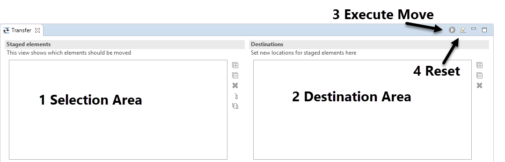

The procedures described here are part of a PROTOTYPE implementation
|
|
The procedures described here are part of a PROTOTYPE implementation |
This PROTOTYPE makes it possible to move elements from a project to a library. (Moving elements from a library to a project will be supported soon). Feel encouraged to report feedback in this bugzilla: https://bugs.polarsys.org/show_bug.cgi?id=1673
When the Transfer view View (Window->Show View->Capella (Incubation)->Transfer) is opened for the first time, it looks like this:

1. The Selection Area shows all elements that should be moved in bold. Drag/Drop model elements from the Capella Project Explorer over this area to fill the view. To remove a selected element from the view, click the small 'x' on the right side of the Selection Area.
2. The Destination Area shows the possible destinations for elements in the selection area. To set a new destination for a selected element, drag/drop the element from the selection area over a suitable parent in the destination area. Elements in the selection area for which a destination element has been selected will appear in green. To clear an already set destination for a selected element, click the small 'x' on the right side of the Destination Area.
3. The execute button is initially disabled. As soon as a destination is set for all selected elements, and no referential problems (see below) are detected, the execute button will be enabled. Selecting the button executes performs semantic validation (see below) and executes the move operation unless semantic validation detected a problem.
4. It is also possible to reset the view by selecting the reset button.
Sometimes it is not possible to move an element in isolation: For example a Class B that extends another Class A cannot be moved without moving A too: When Class B is dropped onto the Selection Area, this problem is detected and presented by drawing the Generalization child of A in red. Hovering over the element will show additional informations on this illegal backreference:

It is possible to click on the hyperlink in the tooltip to select the target element in the Capella project explorer. As long as one or more illegal backreferences are present, the execute button remains disabled. There are always multiple solutions to an illegal backreference: In this case, either add Class A to the Selection Area, or remove the Generalization element from the model. The view detects changes to the model and re-calculates backreferences automatically.
When the execute button is clicked, all selected elements are moved to their new destination, and the semantic validation is performed:
If the semantic validation phase detects one of the errors described above, an error dialog opens and the move action is aborted.